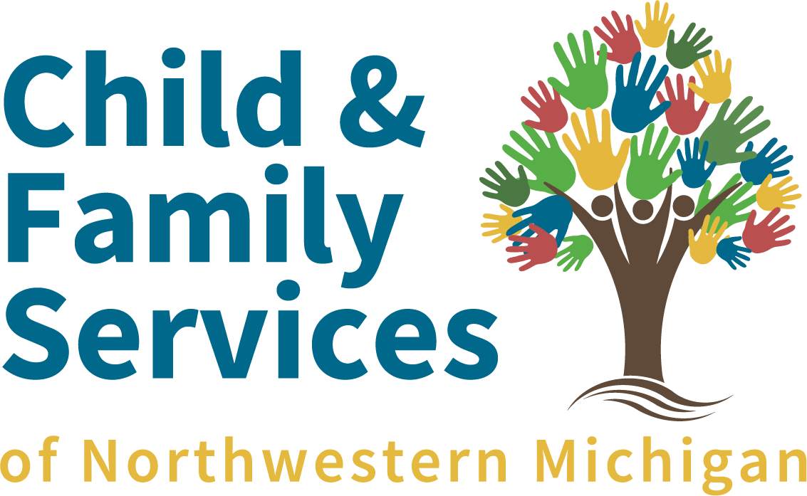
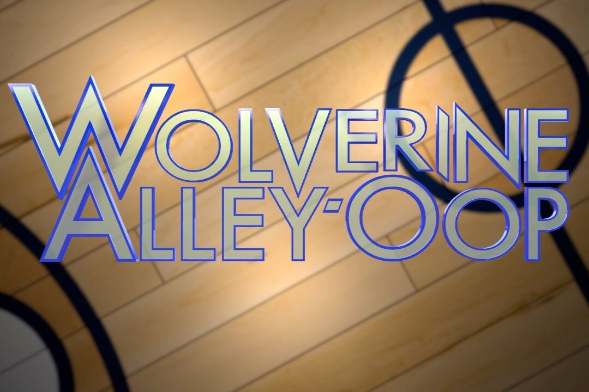
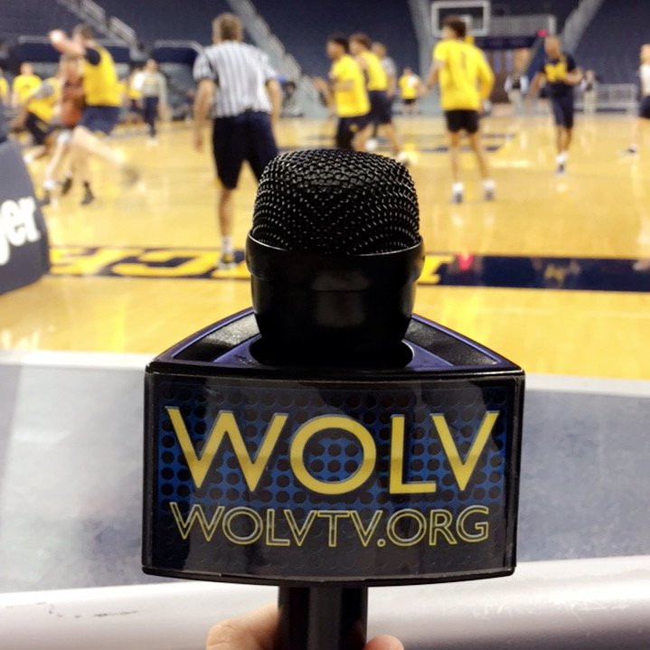

Right now, I am currently enrolled in FTVM 333, Fascist Cinema. This is one of my favorite classes that I have taken so far at the University. Every week, we learn about the history, watch and analyze a film, and discuss our thoughts based on a theme for the week, such as Anti-Semitism or Fascism in Italy
In the past, I have starred in many stage productions, with highlights in such roles as Edgar, the butler from the Aristocats. In my final year of acting, I played three captains: Captain Smollett from Treasure Island, Captain Hook from Peter Pan, and, technically a Captain, Ralph Rackstraw from H.M.S. Pinafore.
More recently, I have worked more on the production side of things in a film/TV environment. Most recently, I have starred in a commercial for Pete's Place, a youth homeless shelter in Traverse City. On the other side of the camera, I have begun work on WOLV TV, and more specifically, Wolverine Alley-Oop, in multiple positions such as working the camera and teleprompter.
  